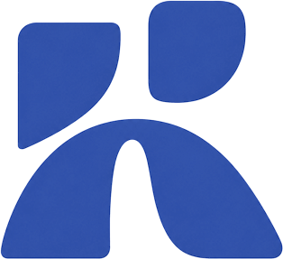

Compiled 12:25 UTC · live data pull 2026-10-09T12:14–12:20Z · CoinGecko, DefiLlama and Alternative.me answered; mempool.space’s difficulty endpoint was empty from the device network and re-read from the cloud workspace; Oct 9 DefiLlama points are partial days, so Oct 8 closes are used for comparisons
What moved · why it matters · what to watch next — source-graded per INTEL_STANDARDS

SIGNAL 01
US spot BTC ETFs lost $244.1M on Oct 8 after $484.9M on Oct 7, $729M in two days, as BTC trades at $83,260 (+1.11%) against a roughly $81,722 average fund cost basis
Moved
Farside puts Oct 8 spot BTC ETF flows at −$244.1M after −$484.9M on Oct 7 ($729M over two days), leaving October at about −$407.4M on the sum of Farside’s prints, and ETH ETFs lost $72.5M for an eighth straight outflow session (−$641.3M since Sep 29). Our CoinGecko pull at 12:14Z reads BTC $83,260 (+1.11% 24h), ETH $2,505.59 (−1.13%) and total market cap $2.793T (−3.31%).
Matters
Bloomberg Intelligence’s James Seyffart puts the average ETF holder’s cost basis near $81,722, within 2% of our spot print and above KuCoin’s $81,607 at about 11:18Z, so flows are now price-reflexive: a break of $80K would put the marginal holder under water. Strategy’s 334-BTC weekly buy ($28.7M, 8-K of Oct 5) is about 6% of Oct 7’s outflow alone, so there is no corporate bid offsetting the funds. The cost-basis figure is one analyst’s estimate; the Oct 8 prints rest on our research agent’s live read of Farside, which returned 403 to our own fetch; BTC prices differ by clock.
Next
Farside’s Oct 9 print (posted the evening of Oct 9): a third straight BTC outflow day takes October past about −$500M, while a net inflow would argue against the capitulation read. September CPI on Oct 14 (BLS; Continuum Economics projects +0.6% m/m): a BTC daily close below $80,000 before then would break the zone, and a hot print keeps December-hike pricing (about 80% per Nexo’s FedWatch read) intact.
✓ Verifiedmarketsetfmacro
SIGNAL 02
Avalanche C-Chain: TVL closed Oct 8 at $638.78M (−3.38%) and reads $611.87M partial today, AVAX is $10.38 (−2.53%), while stablecoin supply rose 0.4% to $1.390B
Moved
DefiLlama’s Avalanche TVL closed Oct 8 at $638.78M, −3.38% on Oct 7’s $661.15M, and the partial Oct 9 point reads $611.87M (−4.2% on the Oct 8 close). Avalanche stablecoin supply is $1.390B on the stablecoinchains endpoint ($1.384B yesterday), DEX volume is $158.0M (−33.23% d/d after yesterday’s +13.76%) and chain fees are $448,661 (−1.45%). AVAX is $10.38 (−2.53% 24h against BTC +1.11%). All-chain DeFi TVL closed Oct 8 at $93.53B (−2.71%) and reads $91.47B partial.
Matters
Yesterday’s NEXT resolved in the gap: the Oct 8 close of $638.78M was neither below $630M nor above $650M. Yesterday’s partial ($627.99M) closed $10.8M higher and Oct 7’s partial closed $25.4M higher, so partials have under-read two days running, which makes today’s $611.87M an unreliable floor test. With stablecoin supply up while TVL and AVAX fall, the move still looks like collateral repricing, not deposits leaving. DEX volume and fees are DefiLlama overview reads whose window differs from the daily TVL close; today’s TVL point is a partial day.
Next
DefiLlama’s Oct 9 daily close (readable Oct 10): a close below $620M confirms a new low for the recent band, while a close above $635M says today’s partial under-read again. Avalanche stablecoin supply holding at or above $1.38B through Oct 12 would keep the repricing reading; a fall below it would break it.
✓ Verifieddefiavalanchestablecoins
SIGNAL 03
ESMA gave EU crypto platforms three months (to about Jan 8, 2027) to stop serving non-MiCA stablecoins, a rule that reaches USDT’s $184.05B, 58.9% of supply
Moved
On Oct 8 ESMA told MiCA-authorised crypto-asset service providers to stop services for non-MiCA stablecoins, clearing pre-existing exposures within three months and allowing only sell, convert, withdraw, transfer or safekeep meanwhile (ESMA; CoinDesk). On our DefiLlama sum USDT is $184.05B of $312.38B total supply (58.9%) and USDC is $73.12B (23.4%); total supply is −0.43% on yesterday’s $313.71B.
Matters
EU buy-side access to the largest stablecoin shrinks, so USDC and EURC are the likely beneficiaries, while USDT’s growth leans on non-EU rails: Tether-backed Utexo plans a USDT launch on Bitcoin via RGB this month (planned, not confirmed), and Sen. Blumenthal’s Oct 8 letter on Cantor’s custody of Tether’s reserves adds US political risk. ESMA’s page names no tokens; USDT and PYUSD as examples come from CoinDesk and CryptoTicker; the opinion goes to national regulators, so enforcement will vary by country.
Next
Whether major EU venues (Coinbase EU, Kraken, Bitstamp) announce USDT buy-side delistings by Oct 31; a venue that keeps USDT trading past the Jan 8, 2027 deadline would falsify the squeeze. OCC’s GENIUS Act final rule, promised “by November”, is the US counterpart: published by Nov 30, or not.
✓ Verifiedrwaregulationstablecoins
📐 MethodologySignal 02 touches Avalanche C-Chain directly. TVL, stablecoin and all-chain figures are this brief’s own live DefiLlama pulls at about 12:18Z (historical series daily closes through Oct 8; the Oct 9 points are partial days), AVAX price is CoinGecko, and DEX volume and fees are DefiLlama overview reads whose window differs from the daily TVL close. Signal 01’s Oct 8 ETF prints are Farside’s, read live by our research agent (Farside returned 403 to our own fetch); Oct 7’s −$484.9M is corroborated by SoSoValue’s −$487.1M. Signal 03 rests on ESMA’s own page plus CoinDesk; the stablecoin shares are our DefiLlama sum. Correction: yesterday’s brief carried the Oct 7 close as $661.18M for Avalanche and $96.10B all-chain; DefiLlama now reads $661.15M and $96.13B.
Breaking — October 9, 2026
US spot BTC ETFs lost $244.1M on Oct 8 after $484.9M on Oct 7 ($729M in two days, Farside), and ETH ETFs are on eight straight outflow sessions (see Signal 01).
Avalanche C-Chain TVL closed Oct 8 at $638.78M (−3.38%) and reads $611.87M partial; stablecoin supply $1.390B, AVAX $10.38 (see Signal 02).
ESMA gave EU crypto platforms three months to drop non-MiCA stablecoins, a rule that reaches USDT’s 58.9% of supply (ESMA, CoinDesk; see Signal 03).
Evernorth’s XRPN merger is not confirmed closed: the Oct 6 8-K says close on or about Oct 9 and Nasdaq trading on or about Oct 12; no closing filing found (SEC EDGAR).
Justin Drake says AI could break ECDSA “within months”; Coinbase’s Yehuda Lindell calls it “FUD” and no break was shown (The Block).
Bain Capital Crypto led Meanwhile’s $37.5M round with Apollo and Northwestern Mutual Future Ventures participating (The Block, single-source).
Bitcoin
$83,260
+1.11% 24h · CoinGecko 12:14Z · other clocks $80.5K–$83.2K, see note
−2.71% vs $96.13B Oct 7 (revised) · DefiLlama Oct 8 close · Oct 9 partial $91.47B
▲ AVAX C-Chain TVL
$638.78M
−3.38% vs $661.15M Oct 7 · Oct 8 close · Oct 9 partial $611.87M
▲ AVAX DEX volume
$158.0M
−33.23% d/d per DefiLlama (yesterday’s read $236.7M) · 📐 window
▲ AVAX chain fees
$448,661
−1.45% d/d per DefiLlama fees overview (yesterday’s read $455,274)
▲ AVAX stablecoins
$1.390B
stablecoinchains now · $1.384B yesterday (+0.4%)
Stablecoin Supply
$312.38B
−0.43% vs $313.71B yesterday · USDT $184.05B · USDC $73.12B · DefiLlama · 📐 see note
BTC Hashrate
982.5 EH/s
mempool.space current (±10%) · 992.4 yesterday · 📐 see note
BTC Difficulty
132.72T
unchanged since the −0.031% retarget on Oct 3
Next Retarget (est)
+4.09%
mempool.space · epoch 46.1% done · 1,086 blocks left · ~Oct 16 · was +5.63% yesterday · 📐 early estimate
US 10-Year Treasury
5.34%
Oct 7 close per Nexo · not live · 📐 no H.15 print opened
📐 MethodologyFive items to carry before reading on.
CoinGecko’s /global reads total cap −3.31% on the same pull as BTC +1.11% and ETH −1.13%; it is an aggregate, so the gap reflects the wider altcoin basket, not a precise market-wide measure. Stablecoin supply reads three ways: $312.38B is our sum of DefiLlama’s USD-pegged circulating supply, rwa.xyz read $295.09B when last opened (Oct 8) and CoinDesk Research $313B on a September-end basis; inclusion rules differ and we do not reconcile them. Hashrate and the retarget are estimates: mempool.space reads 982.5 EH/s (current; the 3-day series shows a partial-day 916 EH/s) and a +4.09% retarget estimate 46.1% into the epoch, down from +5.63% yesterday; hashrate is derived from block timing (±10%), and the difficulty-adjustment endpoint answered empty from the device network and was re-read from the cloud workspace at 12:20Z. The 10-year reads 5.34% at the Oct 7 close per Nexo; we have not opened a Fed H.15 print and the figure is not live. BTC prices differ by clock: $83,260 is ours at 12:14Z, $82,488 was Blockchain Reporter at about 08:09Z and $81,607 KuCoin at about 11:18Z, inside a 24h range of $80,496–$83,150.
How to read the badges.✓ Verified two or more independent outlets, or a primary source (filing, wire release, official API).
◆ Single-source one credible outlet, not independently corroborated — directionally useful, not load-bearing.
⚠ Rumor / Watch unconfirmed, aggregator-only, or self-reported with no third-party check; never used as a Signal.
📐 Methodology attached wherever trackers disagree or bases differ.
A mirror or syndication of the same copy does not count as a second source, and a page seen only as a search snippet is downgraded one tier. Items marked “carried from Oct 8 brief” were opened in that run, keep their tier and were not re-opened today. Full rules in INTEL_STANDARDS.md.
DeFi
Privacy & Security
Mining
Liquidity & Airdrops
Stablecoins & RWA
Crypto & US Stocks
VC & Capital
DeFi & Decentralized Finance
DeFi TVL closed Oct 8 at $93.53B (−2.71%) and reads $91.47B partial today, Avalanche C-Chain closed at $638.78M (−3.38%) and reads $611.87M partial, while the week's news is L2 attrition (Blast, Abstract) and DeFi-to-RWA consolidation (Orca + Loopscale).
Total DeFi TVL (Oct 8 close)
$93.53B
−2.71% vs Oct 7 close ($96.13B, revised); DefiLlama; Oct 9 partial $91.47B
Avalanche C-Chain TVL (Oct 8 close)
$638.8M
−3.38% vs Oct 7 close ($661.1M); DefiLlama; Oct 9 partial $611.9M
Avalanche DEX volume (24h)
$158.0M
−33.23% d/d per DefiLlama (prior window $236.7M); window effect
Avalanche stablecoin supply
$1.390B
+0.4% vs $1.384B yesterday; DefiLlama stablecoinchains
Most Recent (Oct 7–9)
DefiLlama: DeFi TVL closed Oct 8 at $93.53B (−2.71%); Avalanche C-Chain closed at $638.78M (−3.38%) and reads $611.87M partial on Oct 9
✓ Verified DefiLlama live API (primary source), pulled 2026-10-09T12:18Z · Oct 9, 2026 · source
All-chain TVL is $93.53B at the Oct 8 close against $96.13B at Oct 7 (revised from $96.10B) and $91.47B partial on Oct 9, while Avalanche closed Oct 8 at $638.78M against $661.15M and reads $611.87M partial. Why it matters: Yesterday's partial Avalanche read of $627.99M closed $10.8M higher and Oct 7's partial closed $25.4M higher, so partial points have under-read two days running, and with Avalanche stablecoin supply up 0.4% the drop looks like collateral repricing rather than exits. Partial-day point; no article explaining protocol-level TVL moves was found today.
Solana's Orca merges with Loopscale in push to finance AI, robotics and defense
◆ Single-source The Block (exclusive); figures are project-reported · Oct 7, 2026 · source
Solana DEX Orca (over $550B cumulative volume) and lender Loopscale (over $150M deposits, over $2B loans facilitated) merged into "Formation" under Loopscale co-founder Luke Truitt, with terms undisclosed. Why it matters: A top Solana DEX and an on-chain credit venue are pivoting to tokenized real-world-asset financing as plain swap fees compress, the same lane Avalanche's RWA push competes in. Only the exclusive was seen; no deal terms, ORCA token treatment or second outlet.
Hyperliquid Confirms Singapore Registration as MAS Says Exchange Falls Outside Its Jurisdiction
◆ Single-source Blockhead, citing an FT report not opened · Oct 7, 2026 · carried from Oct 8 brief, not re-opened today · source
Hyperliquid confirmed a Singapore registration while MAS says the exchange falls outside its jurisdiction; HYPE was $90.89 with a market cap near $20.2B. Why it matters: The largest on-chain perps venue is picking up a regulatory footprint without a licence, which sets the bar for how DeFi perps venues are treated in Asia. FT original not opened; the registration terms are Hyperliquid's own statement.
Last Seven Days (Oct 2–8)
Pudgy Penguins-backed Ethereum L2 Abstract to shut down after losing 'tens of millions'
Abstract shuts down on Dec 15, 2026 after about 18 months of funding from Igloo, which lost 'tens of millions'; it had 144+ apps and 400,000+ users, and Igloo will not launch a token. Why it matters: Application-specific consumer L2s without deep DeFi liquidity are failing, which favours chains that already hold liquidity (Avalanche L1s share the same exposure), and bridge-out windows create phishing risk for users. The loss figure is Igloo's own; no independent user or TVL data was checked.
◆ Single-source Capwolf (a minor outlet) · Oct 2, 2026 · source
Blast set an Oct 26, 2026 withdrawal deadline for the normal interface route, with user withdrawals paused about a week while Lido-held assets are unwound and the delay then dropping to 24 hours. Why it matters: Two L2 wind-downs in a week (Abstract, Blast) end the subsidy-driven L2 farming model, and Oct 26 is a hard exit date that can produce stuck funds and bridge incidents. Blast's own post was not opened; The Block's Abstract piece mentions a Blast wind-down days earlier, which only partly corroborates; Blast TVL at shutdown was not found.
Jito's JTX plans mobile app this fall, eyes perps integration later this winter
◆ Single-source The Block; plans are project-reported · Oct 7, 2026 · source
JTX, launched July 2026, routes 80% of trading fees to JTO buyback-and-burn and 20% to referrers, and plans an equities feature within two weeks and perps 'maybe later this winter'. Why it matters: Protocol-owned trading fees are being turned into token buybacks, the same revenue-share logic behind the Uniswap fee-switch debate. No volume or fee figures were disclosed.
Key Trends
Weak chains are closing; liquid ones are consolidating. — Blast (Oct 26 exit) and Abstract (Dec 15) are winding down while Orca and Loopscale merge into an RWA-finance stack.
Avalanche TVL is repricing, not emptying. — C-Chain TVL fell 3.38% on the Oct 8 close while its stablecoin supply rose 0.4% to $1.390B and AVAX fell 2.53%.
Fee capture is the product. — Jito’s JTX sends 80% of fees to JTO buybacks and plans equities and perps, the lane Hyperliquid is also seeking regulatory cover for.
Ones to Watch
Blast withdrawal deadline, Oct 26. — Watch whether Blast publishes direct-contract withdrawal instructions before Oct 26 and whether any bridge or withdrawal incident above $1M is reported by that date.
Avalanche TVL close for Oct 9. — Readable Oct 10 on DefiLlama: a close below $620M confirms a new low for the recent band, while a close above $635M says the $611.87M partial under-read again.
📐 Methodology Avalanche TVL: $638.78M is the Oct 8 close and $611.87M the Oct 9 partial (DefiLlama historical series, 12:18Z). Yesterday's brief quoted partials of $627.99M (Oct 8) and $635.83M (Oct 7), which closed higher. DefiLlama also revised Oct 7 slightly (all-chain $96.10B to $96.13B; Avalanche $661.18M to $661.15M). A research subagent's undated /v2/chains read (all-chain about $90.9B, Avalanche about $600.8M) is not used.
📐 Methodology Coverage: no Avalanche C-Chain protocol story dated Oct 2–9 surfaced (searches returned only older Benqi and Nansen pages), and no dated hack report in the window beyond those in the Privacy & Security panel.
Privacy & Security
Justin Drake's warning that AI could break ECDSA "within months" split the industry on Oct 8, FinCEN's Oct 5 withdrawal of its mixer and unhosted-wallet rules removes the main US threat to self-custody tooling, and ZEC is $1,237.82 (+2.93%) against XMR at $539.05.
September hack losses (PeckShield)
$766.5M
worst month of 2026; CertiK $768.4M; carried from Oct 8 brief
Zcash (ZEC)
$1,237.82
+2.93% 24h; CoinGecko 12:14Z
Monero (XMR)
$539.05
−1.02% 24h; CoinGecko 12:14Z
ZEC / XMR ratio
2.30x
2.21x yesterday; CoinGecko pulls
Most Recent (Oct 7–9)
Crypto industry split over Justin Drake's AI warning
Drake said an AI-driven math breakthrough could break ECDSA "within months, not years" after OpenAI published hundreds of model-written math manuscripts on Oct 7, while Coinbase's Yehuda Lindell called it "FUD" and Dragonfly's Haseeb Qureshi backed precaution. Why it matters: Every ECDSA-secured vault, multisig and DAO treasury would face migration pressure if the claim held, and Vitalik Buterin's warning against rushed migrations frames a hasty key move as its own exploit surface. Drake's post and the OpenAI manuscripts were not opened; no evidence of an actual break was presented; The Block's companion Vitalik piece is the same outlet, so it is not a second source.
79thVault Hack: $12.5M Drained From 79AU Pool on BNB Chain
◆ Single-source The Crypto Times; CertiK, GoPlus, PeckShield posts quoted but not opened · Oct 8, 2026 · carried from Oct 8 brief, not re-opened today · source
About $12.5M (16,249 BNB) left the 79AU/USDT pool on PancakeSwap on Oct 7 after an OPERATOR_ROLE wallet called a restricted function seven times, and GoPlus traced about $11.0M (89%) to one address. Why it matters: One privileged key with no multisig or timelock was the whole attack surface; whether it was insider or key theft decides if this is a contract bug or a custody failure. Cause unconfirmed; not Avalanche (BNB Chain).
Uranium Finance hacker convicted over DeFi exploits and laundering
◆ Single-source Crypto Briefing; CryptoTicker's same-day piece draws on the same court reporting · Oct 8, 2026 · carried from Oct 8 brief, not re-opened today · source
A Manhattan jury convicted Jonathan Spalletta on Oct 7 over a $53.3M April 2021 exploit across 26 pools, with about $26M laundered through Tornado Cash and about $31M seized; the maximum is 30 years and sentencing is Feb 16, 2027. Why it matters: A jury rejecting 'the code allowed it' sets a precedent for prosecuting exploit-and-keep conduct. The DOJ release was not opened.
Last Seven Days (Oct 2–8)
Treasury withdraws crypto mixing rule, citing concerns over 'a chilling effect on legitimate activity'
✓ Verified The Block; Decrypt (“Treasury Kills Crypto ‘Unhosted Wallet’ and Mixer Surveillance Rules”); Cointelegraph · Oct 5, 2026 · source
FinCEN withdrew its Oct 2023 Section 311 finding and proposed rule on international crypto mixing and its Dec 2020 unhosted-wallet proposal (recordkeeping above $3,000, reporting above $10,000), with Federal Register publication on Oct 6. Why it matters: This removes the main US regulatory threat to mixers and self-custody, which strengthens the legal case for privacy tooling. Neither proposal was ever finalized, so existing obligations are unchanged; FinCEN says it will continue to monitor mixers and Coin Center notes the statutory authority remains; the Federal Register notice was not opened. Also run in the Oct 6 brief.
Hacker gets added to a Base DeFi vault's whitelist twice in one minute
◆ Single-source Startup Fortune; the vault operator is unnamed · Oct 5, 2026 · carried from Oct 8 brief, not re-opened today · source
About $6M (1,783 wstETH) left a Base vault on Oct 4 after a 3-of-7 Safe multisig removed and re-added the attacker's contract at 08:52 and 08:53 UTC, leaving $31.7M in the vault. Why it matters: Valid signer signatures point to key compromise or insider action rather than a code bug, so integrators carry curator key-hygiene risk. DefiLlama's hacks API does not list this incident, so the tracker undercounts the week.
Chainalysis Used AI to Trace the $387M Bitget Hack Back to North Korea
✓ Verified Decrypt (Oct 3); BlockchainReporter/CryptoRank (Oct 3); Bitget's CEO and Elliptic also link it to DPRK · Oct 3, 2026 · carried from Oct 8 brief, not re-opened today · source
Chainalysis attributes the $387M Sept 24 theft to DPRK-linked actors across 23 transfers in 3 hours, split Ethereum 49.7%, XRP 40.8%, Zcash 7.6% and Tron 1.8%, with about $318K frozen by Circle and Tether. Why it matters: About $29M in ZEC makes Zcash liquidity part of the laundering path, raising odds of exchange or regulator pressure on shielded-asset flows. The attribution and the 'under 10 minutes' tracing claim are vendor-reported; the Chainalysis primary page was not opened.
Key Trends
Keys and signers, not code, still drive the losses. — The Base vault’s re-whitelisted attacker contract used valid signatures, and Bitget and 79thVault also turn on custody and permissions.
US policy is easing on privacy tooling while forensics improves. — FinCEN withdrew both rules on Oct 5 while Chainalysis traced 7.6% of Bitget proceeds into Zcash.
The ECDSA debate is now a DeFi operations question. — Drake’s “months” timeline meets Lindell’s “FUD” with no demonstrated break, but the migration risk is already being argued over.
Ones to Watch
Base vault post-mortem and attribution. — Falsifiable: the operator identifies itself or a security firm confirms the root cause (compromised signer versus social engineering) by Oct 16, and whether the stolen wstETH moves through Tornado Cash or Railgun.
Monero FCMP++ stressnet (RUMOR / WATCH). — A CoinStats mirror of CryptoTicker reports an Oct 5 stressnet fork at block 3,102,800; testnet only with no mainnet date, so confirm via the Monero project before treating it as a catalyst. Falsifiable: a mainnet date published by Dec 31, 2026.
📐 Methodology Hack totals: H1 2026 losses read more than $1.1B across 212 exploits (Blockaid), about $956M across 182 incidents (SlowMist) and $972M (Whale-Alert and CryptoTimes top-10 basis); September reads $766.5M (PeckShield) and $768.4M (CertiK), though CryptoTimes quotes CertiK at about $766.4M. The Base vault loss was first flagged at $2.02M and later exceeded $6M. None is reconciled.
📐 Methodology Coverage: no new Zcash story for Oct 2–9 and no new hack, audit or forensics story dated Oct 8–9 beyond 79thVault; the Federal Register FinCEN notice, Drake’s post and the Monero release notes were not opened.
Mining
Hashrate reads 982.5 EH/s and difficulty is unchanged at 132.72T with the next retarget estimated at +4.09% around Oct 16, while the pivot's financing question grew: Wells Fargo sees more than $20B of secured debt and B. Riley a $29.2B funding gap.
BTC hashrate (current)
982.5 EH/s
mempool.space; −1.0% vs 992.4 yesterday; ±10% estimate
Difficulty
132.72T
unchanged since the Oct 3 retarget (−0.031%)
Next retarget (est.)
+4.09%
mempool.space; 46.1% through epoch; ~Oct 16; was +5.63% yesterday
AI/HPC miner equities
−34%
average vs Jun 22 peak to Sep 28 per B. Riley; single analyst
Most Recent (Oct 7–9)
Bitdeer Secures 67MW AI Data Center Campus in Malaysia, Bringing Total to 273.5MW
◆ Single-source TheEnergyMag (bylined “TheEnergyMag AI”; no wire release seen); capacity and pipeline figures are company-reported · Oct 8, 2026 · source
Bitdeer added a 67 MW “A901” Malaysia campus (10-year services agreement, first delivery Q1 2027), taking secured AI Cloud capacity to about 273.5 MW, roughly 78% of its 350 MW Q1 2028 target, against a pipeline above $10B that is a management estimate. Why it matters: The 78% measures secured power, not contracted offtake: Q2 AI Cloud revenue was about $14M with a $2.3M gross loss, and no customer is signed for A901. Bitdeer withdrew an earlier Oct 8 release (60 MW, 333.5 MW total, 95%) and replaced it; this page’s URL slug and meta still carry the withdrawn “60MW/95%” figures, so use 67 MW, 273.5 MW and 78%.
Simple Mining Buys DarkHorse's Iowa Bitcoin Mine for $1.5 Million
◆ Single-source TheEnergyMag · Oct 8, 2026 · source
Simple Mining bought an approximately 8 MW Iowa mine for $1.5M ($300K cash plus a $1.2M interest-free 12-month note from Dec 1, 2026) with about $525K of recoverable utility deposits, taking its Iowa platform to about 160 MW. Why it matters: About $190K per MW with utility deposits recoverable is a price point for legacy bitcoin sites as sellers pivot toward a Kentucky/TVA data-center footprint. Small deal; the agreement was signed Sept 1 per a DarkHorse filing cited by the article, which was not opened.
Foundry CEO Colyer Steps Down as Bitcoin Pool's Share Retreats
◆ Single-source TheEnergyMag · Oct 7, 2026 · source
Mike Colyer is stepping down after seven years as Foundry CEO and will advise for six months with no successor named, while Foundry USA’s block share was 26.5% in July (1,152 of 4,341 blocks) against 32.7% in March (1,422 of 4,349). Why it matters: The largest pool lost about 6 points of block share in four months, so pool concentration and the succession are worth tracking as miners trim bitcoin capacity. Colyer cited a break and family and the article does not link the exit to mining economics; the block-share data is July and March, not current.
Last Seven Days (Oct 2–8)
B. Riley tightens HPC estimates, favors Core Scientific and TeraWulf
◆ Single-source Blockspace Media (analyst note) · Oct 7, 2026 · source
B. Riley says the group is down an average 34% from the June 22 peak to Sept 28, sees a $29.2B funding gap for about 2,554 MW of contracted capacity, targets CORZ $42 and WULF $40, and notes CleanSpark’s $2.276B 7.875% senior secured notes due 2031 (priced Sept 18 at 98.5%). Why it matters: A 7.875% coupon at a discount to par is a market-clearing borrowing cost for a miner-origin issuer, and a 34% drawdown says equity is not pricing the pivot as de-risked. The $29.2B gap is one analyst’s estimate on a different basis from Wells Fargo’s “more than $20B”.
Wells Fargo keeps AI/HPC operators Overweight ahead of debt raises
◆ Single-source Blockspace Media (analyst note) · Oct 7, 2026 · carried from Oct 8 brief, not re-opened today · source
Wells Fargo expects over $20B of secured debt from the sector (Applied Digital about $8B, Core Scientific about $5B, TeraWulf $3.5–4B) at about 6.8–7.2% for AWS/NVIDIA-backed deals versus 8–9%+ for CoreWeave/Oracle-linked debt. Why it matters: Financing cost now depends on the tenant's credit, so equity upside rides on which tenants sign the miners, not just megawatts delivered. Same-day B. Riley note sees $29.2B unsourced; both come through the same outlet, so no upgrade.
AI cloud pricing rises as new-site leasing stalls, Needham says
◆ Single-source Blockspace Media (analyst note) · Oct 7, 2026 · carried from Oct 8 brief, not re-opened today · source
Colocation operators signed just over 1.4 GW in Q3 against just over 1.5 GW in Q2, with 50+ days since a new-site lease and AI cloud contracts clearing at $15–20M+ per MW annualized. Why it matters: Needham expects few large leases before the November midterms and few Texas leases before December ERCOT approvals, so the next miner-to-AI lease catalysts look like 2027. One analyst's view relayed by one outlet.
Key Trends
Financing is now the story. — More than $20B (Wells Fargo, next few quarters) to $29.2B (B. Riley, contracted capacity) of project debt is queued, and CleanSpark’s 7.875% notes show the price.
Pivot equities are weak while cloud pricing rises. — The group is down 34% from the Jun 22 peak while Needham sees $15–20M+ per MW of annualized revenue yet no new-site lease for more than 50 days.
Bitcoin-side capacity is being sold cheap. — A legacy Iowa site cleared at about $190K per MW and Foundry’s block share fell from 32.7% to 26.5%.
Ones to Watch
New-site AI leases and the funding window. — A new-site lease would end the 50-plus-day drought Needham counted on Oct 7 (falsifiable by Oct 31); TeraWulf’s Muskie lease (Wells Fargo flags 400 MW by Q1 2027) and Kentucky PSC approval are due by Dec 31. A TheEnergyMag listing summary, not opened, says Firmus scrapped a US$5B Australian IPO (RUMOR / WATCH).
Mid-October difficulty retarget. — mempool.space estimates +4.09% around Oct 16; a print near +4% would say hashrate is holding, a negative print that capacity is leaving.
📐 Methodology Funding gap: Wells Fargo’s more than $20B covers secured debt sought over the next few quarters (Applied Digital about $8B, Core Scientific about $5B, TeraWulf $3.5–4B), B. Riley’s $29.2B is a gap on about 2,554 MW of contracted capacity; the bases differ. Bitdeer’s capacity reads 273.5 MW (78%) in the replacement release and 333.5 MW (95%) in the withdrawn one; we use the replacement.
📐 Methodology Hashrate and the retarget are estimates: 982.5 EH/s is mempool.space’s current reading (the 3-day series shows a partial-day 916 EH/s for today), derived from block timing (±10%). /v1/difficulty-adjustment answered empty from the device network and was re-read from the cloud workspace at 12:20Z (+4.09%, 1,086 blocks remaining). A Pluang aggregator item citing $1.12B of September miner revenue and hashprice near $40/PH names no upstream source and is not run (RUMOR / WATCH). Coverage: no wire release or SEC filing was opened, and nothing on ASIC hardware or pools dated Oct 8–9 surfaced.
Liquidity & Airdrops
Sonic's claim window closes Oct 15 with about 32.69M unclaimed S eligible for burn, the Oct 9–16 unlock calendar is led by ADI (about $58.0M, Oct 9) and PUMP (about $35.95M, Oct 14), and no Avalanche-specific airdrop or incentive story dated Oct 2–9 surfaced.
Sonic unclaimed S
32.69M
claims close Oct 15, then eligible to burn; Sonic Labs blog + CryptoTicker
Largest unlock this week (ADI)
$58.03M
6.99M ADI, 0.70% of supply, Oct 9; Coingabbar; single calendar
PUMP unlock (Oct 14)
$35.95M
6.87B PUMP, 0.83% of supply; Coingabbar; single calendar
Apyx TGE (reported)
Oct 13
unconfirmed; no official Apyx announcement seen
Most Recent & Upcoming (Oct 8–16)
Sonic Airdrop Burn and Final Claim Deadline
✓ Verified Sonic Labs official blog (primary, dated Apr 2, 2026); CryptoTicker corroborates · Oct 5, 2026 · source
About 32.69M S remains unclaimed from Seasons 1 and 2; claims are penalty-free until Oct 15, 2026, after which locked S becomes eligible to burn and the contract lets anyone trigger the burn, which CryptoTicker values at about €1.19M at roughly $0.04 per S. Why it matters: A hard cutoff followed by a burn ends the free option for lapsed claimants and removes a latent overhang, while the final week draws scam and phishing traffic. The announcement is six months old; the euro value is CryptoTicker’s own price assumption, and because the burn is permissionless, timing after Oct 15 is not guaranteed.
Token Unlocks in October 2026: 7 Releases That Could Move Markets
Two unlocks fall in Oct 9–16: ADI releases 6.99M tokens (0.70% of supply, about $58.03M) on Oct 9 and PUMP 6.87B tokens (0.83% of supply, about $35.95M) on Oct 14. Why it matters: ADI is the largest USD unlock in the window, while PUMP’s unlock meets a buyback programme that has shrunk (cumulative buybacks above $350M and a move to a 50/50 revenue split, per a Crypto Briefing piece of Aug 10). The article itself says schedules can shift; the ADI unlock could not be corroborated elsewhere.
Crypto Airdrops Week 41/2026: All the Deadlines
◆ Single-source CryptoTicker · Oct 5, 2026 (updated Oct 8) · source
Beyond Sonic’s Oct 15 cutoff, the Pharos (PROS) portal closes Oct 25 and Grass Stage 2 claims run to Jan 22, 2027 and pay out in USDC rather than GRASS. Why it matters: Airdrop programmes are moving from open-ended claims to hard deadlines, which trims overhang but concentrates scam attempts into the final days. The Pharos and Grass lines rest on this one roundup, and what changed in the Oct 8 update could not be seen.
Last Seven Days (Oct 2–8)
Three Major Token Unlocks to Watch in Early October 2026
◆ Single-source KuCoin Flash, a syndication of BeInCrypto · Oct 5, 2026 · carried from Oct 8 brief, not re-opened today · source
About $1.11B unlocks in early October: HYPE 3.75M ($340M, Oct 6), ENA 171.88M ($41.52M, Oct 5) and APT 11.31M ($9.06M, Oct 11). Why it matters: HYPE is about 31x ENA by value, so the month's supply risk sits in one name whose team controls the claim size. Aggregator flash of one original; the Oct 5 date is borderline for the window.
Hyperliquid Unlocks 3.75M HYPE Tokens in $329M OTC Deal
◆ Single-source KuCoin Flash republishing BeInCrypto; both rest on a Hyper Foundation Discord post (self-report) · Sep 30, 2026 · carried from Oct 8 brief, not re-opened today · source
Hyperliquid Labs is unstaking 3.75M HYPE (~$329M, ~1.5% of circulating supply) for one unnamed institutional buyer via OTC, with tokens set to move by Oct 7. Why it matters: Routing the monthly team unlock off the order book removes the open-market sell risk that headline unlock calendars price in. Carried from outside the window; buyer, price and lockup undisclosed; completion of the Oct 7 transfer not confirmed.
Apyx TGE and airdrop reported for Oct 13 as points season 2 ends Oct 11
⚠ Rumor / Watch Bitget News relaying Odaily; project-reported via X, no third-party check · May 22, 2026 (page date; year of the Oct 13 date presumed) · carried from Oct 8 brief, not re-opened today · source
Apyx raised its points allocation from 4% to 6% of supply, with the TGE and airdrop reported for Oct 13. Why it matters: If real, it is the nearest dated TGE in the window; the claim has no confirmation to anchor on. The page predates the window by months, so the 2026 date is an assumption.
Key Trends
Airdrops are moving to hard deadlines with burns. — Sonic (Oct 15), Pharos (Oct 25) and Grass (paying in USDC) all close claims, which trims overhang.
Unlocks are dominated by chain and launchpad tokens. — ADI, PUMP, ZRO and AKE are mostly under $100M each, not large-cap cliffs.
Points seasons end days before the TGE. — Apyx’s Season 2 closes Oct 11 with a reported Oct 13 TGE, which concentrates farmer selling on day one.
Ones to Watch
Sonic burn, Oct 15. — Falsifiable: no burn transaction for the remaining locked S (about 32.69M or less) within a few days after the Oct 15 cutoff means the permissionless burn is sitting unexecuted.
Apyx TGE, Oct 13 (RUMOR / WATCH). — Falsifiable: no listing or claim live by Oct 14 means the date was wrong; ZRO (25.71M, about $40.58M, Oct 20) and AKE (2.10B, about $66.93M, Oct 21) unlock just after the window.
📐 Methodology Unlock calendars disagree: KuCoin/BeInCrypto lists APT 11.31M (about $9.06M) on Oct 11 while Coingabbar’s Oct 9–16 window omits APT; PUMP reads 6.87B on Oct 14 at 0.83% of supply (Coingabbar) against 6.875B on Aug 12 at 0.69% of the 1T supply (Crypto Briefing), the same count on a different date and basis. The HYPE unlock reads 3.75M HYPE (about $329M OTC) in one report and 9.92M (about $857M) as a calendar figure; none is reconciled.
📐 Methodology Coverage: the search index returned almost nothing dated Oct 8–9, and no Avalanche-specific program surfaced (only evergreen Retro9000 pages, not used). KuCoin’s Oct 5 item is a syndication of BeInCrypto, so it is not a second source.
Stablecoins & RWA
ESMA gave EU crypto platforms three months to drop non-MiCA stablecoins (USDT is 58.9% of supply on our DefiLlama sum), stablecoin supply reads $312.38B (−0.43%), and tokenized Treasuries on Avalanche stand at $545M per rwa.xyz via Benzinga.
Stablecoin supply (total)
$312.38B
−0.43% vs $313.71B yesterday; DefiLlama API sum 12:18Z
USDT
$184.05B
58.9% of supply; the token EU venues must drop buy-side
USDC
$73.12B
23.4% of supply; DefiLlama
Avalanche stablecoin supply
$1.390B
+0.4% vs $1.384B yesterday; stablecoinchains
Most Recent (Oct 8–9)
ESMA sets out supervisory expectations on services related to unauthorised stablecoins
✓ Verified ESMA (primary); CoinDesk (“ESMA gives EU crypto platforms 3 months to drop non-MiCA stablecoins such as USDT”); CryptoTicker · Oct 8, 2026 · source
ESMA told MiCA-authorised crypto-asset service providers to stop services for non-MiCA stablecoins, with pre-existing exposures cleared within three months (about Jan 8, 2027) and only sell, convert, withdraw, transfer or safekeep allowed in the interim. Why it matters: USDT is about $184B, 58.9% of stablecoin supply on our DefiLlama sum, so EU buy-side access to the largest stablecoin shrinks and USDC (23.4%) and EURC are the likely beneficiaries; the same logic reaches PYUSD. ESMA’s page names no tokens, so USDT and PYUSD as examples come from CoinDesk and CryptoTicker; the opinion goes to national regulators, so enforcement and timing will vary by country.
Top Democrat among Senate investigators probes ties between Cantor Fitzgerald, Tether
Sen. Blumenthal, top Democrat on the Permanent Subcommittee on Investigations, wrote to Cantor CEO Brandon Lutnick about Cantor’s custody of Tether’s US reserves and Tether’s role in Iran’s financial system. Why it matters: A Democratic Senate (priced at about 61% on Kalshi and 64% on Polymarket, per the article) would gain subpoena power over Tether’s main US reserve custodian, adding political risk to the dominant stablecoin as GENIUS Act rules are finalised. A letter, not findings; neither company had commented; CoinDesk’s parent Bullish is disclosed as a stakeholder in the article, and the odds are a snapshot.
XRP Ledger adds new controls for banks, stablecoins and tokenized funds
◆ Single-source CoinDesk; metrics are project- or promoter-reported · Oct 9, 2026 · source
XRPL’s PermissionDelegationV1_1 amendment, activated Oct 8, lets helper accounts hold up to 10 granular permissions without sharing keys, on a ledger averaging $3.72B of tokenized assets and $539M of RLUSD in Q2 (about $4.26B combined, per an Evernorth-shared report). Why it matters: It lets regulated issuers run compliance functions with cold main keys, lowering the operational barrier as XRPL competes for institutional RWA. Guidance says not to delegate PaymentBurn until a separate fix passes, which had 27 of the 29 validator votes needed; a reported validator-counting bug is unpatched.
Last Seven Days (Oct 2–8)
Tokenized Treasuries on Avalanche Surge 300% in a Year—Will the Momentum Push AVAX Toward $12 and Beyond?
◆ Single-source Benzinga, citing rwa.xyz (Avalanche) · Oct 7, 2026 · carried from Oct 8 brief, not re-opened today · source
Tokenized US Treasuries on Avalanche stand at $545M (+14% in Q3) within $1.67B of total tokenized assets and over $930M of stablecoins, all per rwa.xyz. Why it matters: Treasuries are Avalanche's second-largest tokenized category, so the chain's RWA story rests on a small base of cash-like assets, not the $11B headline. AMBCrypto's Oct 6 piece carries the same figure from the same data, so it is not independent; the price outlook is commentary.
Wall Street’s tokenization boom could have bigger winners than bitcoin and ether, Citrini says
◆ Single-source CoinDesk (reporting a third-party research opinion) · Oct 8, 2026 · source
Citrini’s 79-page report names stock baskets (SECZ, COIN, HOOD, CRCL, FIGR, SOFI, BLSH) and token baskets (Ondo, Maple, Pendle, Aave, Ethena, Chainlink and others) and argues BTC and ETH may not make new highs on this theme. Why it matters: Research attention is rotating from the majors toward fee-capturing RWA protocols, which can move basket names on sentiment alone. One firm’s opinion that itself warns more activity does not guarantee token gains; CoinDesk’s parent Bullish is in the stock basket.
Tokenized stocks surge as CFTC chair heralds era of ‘mass tokenization’
◆ Single-source The Block (Layer One newsletter) · Oct 4, 2026 · source
On-chain tokenized stocks passed $3B and sit at about $3.25B on RWA.xyz data, with holders up more than 60% in 30 days to about 4.1M, and CFTC Chair Selig told regulators to prepare for “mass tokenization”. Why it matters: Holder growth is outpacing value growth, so retail adoption is leading institutional supply, and regulator rhetoric is converging on an exemption path. The tracker figure is RWA.xyz via one newsletter; CoinDesk Data puts tokenized equities at $4.87B on a September basis (see methodology).
Key Trends
The EU squeezes USDT while the US scrutinises it. — ESMA’s three-month wind-down on Oct 8 and Sen. Blumenthal’s letter the same day hit the dominant stablecoin from both sides.
Tokenization is shifting from Treasuries and money funds to equities and private credit. — CoinDesk’s Oct 6 report has tokenized bond and money-market funds down 8.1% to $17.3B and Circle’s USYC down 13.4% to $2.40B, while Ethena USDe rose 20.2% to $4.90B and private credit reached $5.62B.
Distribution deals and new rails compete for share. — Binance’s $100M Circle stake and five-year USDC deal (Sep 26), a planned USDT launch on Bitcoin via Utexo and RGB (planned, not confirmed), and XRPL permissions all target stablecoin flow.
Ones to Watch
OCC GENIUS Act final rule. — Comptroller Gould said on Aug 19 it would come “by November”; falsifiable: published by Nov 30, 2026 (no new publication found for Oct 2–9).
EU venue USDT delistings. — Falsifiable: whether major EU venues (Coinbase EU, Kraken, Bitstamp) announce USDT buy-side delistings by Oct 31, and whether Utexo’s USDT-on-Bitcoin launch lands by the same date.
📐 Methodology Stablecoin supply reads three ways: $312.38B is our sum of DefiLlama’s USD-pegged circulating supply (12:18Z), rwa.xyz read $295.09B when last opened (Oct 8) and CoinDesk Research $313B on a September-end basis; inclusion rules differ and we do not reconcile them. USDT reads about $184B (DefiLlama, CoinGecko) against “nearly $190B” in a CoinDesk piece of Oct 2.
📐 Methodology Tokenized equities: CoinDesk Data’s Oct 6 report says holdings grew 13.7% to a record $4.87B on a September basis (Securitize $1.62B), RWA.xyz via The Block (Oct 4) says about $3.25B; bases differ and are not reconciled. Coverage: no depeg reports surfaced and the OCC final rule had not appeared; the rwa.xyz page was not re-opened today.
Crypto & US Stocks
US spot BTC ETFs lost $244.1M on Oct 8 after $484.9M on Oct 7 ($729M over two days), BTC is $83,260 (+1.11%) on our 12:14Z pull while other clocks print $80.5K–$83.2K, and Sept CPI on Oct 14 is the next test for a market pricing a December hike.
US spot BTC ETF flow (Oct 8)
−$244.1M
Farside; −$729M over Oct 7–8; October to date about −$407.4M
US spot ETH ETF flow (Oct 8)
−$72.5M
Farside; 8th straight outflow session; −$641.3M since Sep 29
Bitcoin (CoinGecko 12:14Z)
$83,260
+1.11% 24h; clock-dependent, see methodology
Fear & Greed
59
“Greed”; 64 yesterday; Alternative.me
Most Recent (Oct 8–9)
Bitcoin ETF Investors Withdraw $729M as Price Near Estimated Breakeven
✓ Verified Farside Investors (primary data, opened live by our research agent), relayed by KuCoin News Flash syndicating NS3, with BeInCrypto and Bloomberg Intelligence data · Oct 9, 2026 · source
US spot BTC ETFs lost $484.9M on Oct 7 and $244.1M on Oct 8 ($729M over two days) and ETH ETFs have lost $641.3M over eight sessions since Sep 29. Why it matters: BTC at about $81.6K on KuCoin’s clock sits just under the roughly $81,722 average ETF cost basis (Bloomberg Intelligence’s James Seyffart), so holders are near or under water and a break of $80K risks a capitulation loop; Strategy’s weekly 334-BTC buy ($28.7M) is about 6% of Oct 7’s outflow alone. The KuCoin page syndicates NS3 and is not a second source; Farside is the primary, and Oct 7’s −$484.9M is corroborated by SoSoValue (−$487.1M); the cost-basis figure is one analyst’s estimate.
Bitcoin Price Today: BTC Rebounds Above $82,000 as Trump Rules Out Iran Strike
BTC was about $82,488 (−0.6% over 24h) after a $80,496–$83,150 range while WTI eased from about $93.20 to $90.69 after Trump said the US will not strike Iran before the Nov 3 midterms, and more than $356M of ETH positions were liquidated. Why it matters: Crypto is trading as a macro-risk asset tied to oil, yields and geopolitics, and an oil relief rally is fragile while 10-year yields sit near multi-decade highs. A point-in-time price; the Iran statement was not confirmed by a second outlet in our reading; prices differ by clock (see methodology).
Bitcoin slips to a three-week low near $83,000 as Fed minutes keep a December hike in play
Oct 7 closes were S&P 500 −0.3% to 7,798.14, Nasdaq −0.2% to 27,538.69 and Dow −0.7% to 51,179.22, with the 10-year about 5.34% (+28bp since the September hike), the 30-year about 5.72% and FedWatch near 20% for an October hike and about 80% by December. Why it matters: Long-end yields near 24-year highs squeeze duration and risk assets together, and Sept CPI on Oct 14 is the next test of the December-hike pricing. Index levels are Oct 7 closes and no Oct 8 close was found; UseTheBitcoin cites about 18% for an October hike on a different snapshot.
Last Seven Days (Oct 2–8)
Minutes of the Federal Open Market Committee, September 15–16, 2026
✓ Verified Federal Reserve (primary); FXStreet and StockTitan confirm · Oct 7, 2026 · carried from Oct 8 brief, not re-opened today · source
The committee voted 12-0 for a 25 bp hike to 3.75–4.00%, most participants judged another increase 'likely appropriate by year-end', and 2–10 year Treasury yields rose about 35 bp. Why it matters: The minutes do not commit to a hike on Oct 27–28 (FXStreet says traders expect a hold), so the data path, starting with CPI, now sets the odds. StockTitan's PCE and dot-plot figures (3.6% headline, 3.2% core) were not checked against the Fed page.
Strategy Inc Form 8-K reporting Oct 1–4 bitcoin purchases (334 BTC)
✓ Verified SEC EDGAR Form 8-K (primary filing, opened by our research agent) · Oct 5, 2026 · source
Strategy bought 334 BTC for $28.7M (about $85,839 each) between Oct 1 and 4, taking holdings to 848,000 BTC at an average cost of about $75,441 ($63.97B), funded by $15.7M of stock sales and $13.0M of cash. Why it matters: At about $28.7M a week the buying is small against $729M of ETF outflows over two days, but a $75.4K cost basis sits about 9% below spot, so Strategy’s stress point is further off than the ETF holders’. The 8-K for the Oct 5–11 week would likely be filed Monday Oct 12 and was not checked.
The CLARITY Act Stalls in the Senate: What's Next for Digital Asset Regulation
◆ Single-source Orrick law-firm client alert · Oct 2, 2026 · carried from Oct 8 brief, not re-opened today · source
Senate cloture failed 49-50 on Sep 15 (60 needed) over ethics provisions and stablecoin yield, with the SEC's proposed Regulation Crypto Assets closing comments Oct 20. Why it matters: With November midterms ahead, passage this Congress looks unlikely and policy shifts to agency rulemaking. No primary source (congress.gov, SEC) was opened.
Key Trends
ETF outflows are rising as price tests the ETF cost basis. — BTC funds shed $729M in two days and ETH funds are on eight straight outflow sessions, after BTC funds took in $2.65B in September.
Rates are the dominant driver. — The Fed hiked in September, the 10-year is about 5.3%, the 30-year about 5.7%, December hike odds are around 80% and Brent is near $100.
Crypto-specific catalysts are weak. — CLARITY failed cloture 49–50 on Sep 15, Strategy buys only about $29M a week, and liquidations keep recurring.
Ones to Watch
September CPI, Tue Oct 14 (BLS). — Continuum Economics forecasts +0.6% m/m (about 3.7% y/y); falsifiable: does BTC hold $80K and does the 10-year stay above 5.3% after the print?
Farside Oct 9 prints (evening Oct 9). — A third straight BTC outflow day would push October past about −$500M; a flip to inflow would argue against the capitulation read, and ETH extending to a ninth outflow session would confirm it is not BTC-specific.
📐 Methodology Prices differ by clock: BTC is $83,260 (+1.11%) on our CoinGecko pull at 12:14Z, about $82,488 (−0.6%) on Blockchain Reporter at about 08:09Z and $81,607 (−2.2%) on KuCoin at about 11:18Z, inside a 24h range of $80,496–$83,150; 24h baselines differ by source. CoinGecko /global shows total market cap −3.31% on the same pull as BTC +1.11%, an aggregate that includes the wider altcoin basket.
📐 Methodology ETF flows: Oct 7 reads −$484.9M (Farside) and −$487.1M (SoSoValue, TFTC), rounding. October to date reads −$407.4M on our sum of Farside prints (Oct 1–8) and on KuCoin/NS3, −$409.7M on TFTC and −$165.6M on Nexo, which looks stale because it excludes Oct 8. CLARITY odds: Polymarket fell from 29.5% to 6.5% (The Defiant, after the vote) and from 35% to 19% before it (Decrypt); different timestamps. Coverage: no Oct 8 equity close, H.15 10-year print, SEC or CFTC item dated Oct 2–9, or COIN/MSTR/miner move for Oct 7–9 was found. The Farside pages returned 403 to our own fetch, so the Oct 8 prints rest on the research agent’s live read.
VC & Capital
Evernorth's XRPN SPAC close slipped to on or about Oct 9 with Nasdaq trading about Oct 12 and no closing filing found, Bain Capital Crypto led Meanwhile's $37.5M round, and Deus X is winding down as backers rotate toward AI.
Meanwhile round
$37.5M
led by Bain Capital Crypto; total funding above $180M; single-source
Finance Magnates; single-source (carried from Oct 8 brief)
Most Recent (Oct 7–9)
Sam Altman-backed bitcoin life insurer Meanwhile raises $37.5 million round led by Bain Capital Crypto
◆ Single-source The Block · Oct 9, 2026 (announced Oct 8) · source
Bermuda-based Meanwhile raised $37.5M led by Bain Capital Crypto with Haun Ventures, Framework Ventures, Pantera, Apollo, Northwestern Mutual Future Ventures and Morgan Creek Digital, taking total funding above $180M with 15 brokers signed. Why it matters: Apollo and Northwestern Mutual on the cap table suggest traditional insurance and credit capital is taking small bets on BTC-denominated liabilities, which would create structural demand for BTC held as statutory capital if the product scales. No valuation or series was disclosed, no company release or second outlet was opened, and the article says the money came from existing investors.
Evernorth Form 8-K (Rule 425): Armada Acquisition Corp. II closing expected on or about October 9, XRPN trading on or about October 12
✓ Verified SEC EDGAR Form 8-K, Item 7.01 (primary); crypto.news (“Evernorth pushes XRPN Nasdaq trading debut to Oct. 12”) · Oct 6–7, 2026 · source
The close is expected on or about Oct 9 (previously Oct 7) with XRPN trading on Nasdaq on or about Oct 12 (previously Oct 8), blamed on “an administrative delay that is not expected to affect the closing”, for expected gross cash of about $300M ($225M private placements, $30M 4% PIK convertible notes due 2031 and about $48M of trust cash) and about 473M XRP. Why it matters: It is the first large XRP treasury vehicle to list, and only about $48M of trust cash against $225M of PIPE money implies heavy redemptions, so an Oct 12 debut tests whether treasury-SPAC premiums survive. The schedule is verified; the closing itself is not: no post-Oct 6 filing was found and EDGAR’s full-text pages were blocked to our fetcher. The counterparty is Armada Acquisition Corp. II; “over $1B raised” is the transaction-wide total per crypto.news.
Wells Fargo in talks with Kraken parent Payward for crypto trading liquidity
◆ Single-source CoinDesk, citing two people with direct knowledge · Oct 7, 2026 (URL path reads Oct 5; page shows Oct 7) · carried from Oct 8 brief, not re-opened today · source
Payward is negotiating to supply trading liquidity to Wells Fargo, following Nasdaq's $100M investment in Payward in September. Why it matters: It would move Kraken from selling to retail toward acting as wholesale infrastructure for a top-4 US bank, supporting its valuation story ahead of a delayed IPO. Unnamed sources; talks 'may not result in a deal'.
Last Seven Days (Oct 2–8)
Crypto investment firm Deus X Capital shuts down as backers pursue separate strategies
◆ Single-source CoinDesk · Oct 6–8, 2026 (URL path reads Oct 6; page byline Oct 8) · source
Deus X, launched in Oct 2023 with about $1B in investments and capital, formally unwinds on Jan 31, 2027 as the Morton family splits into an AI venture (Darius, led by Shane Morton) and a markets/fintech vehicle (95), after committing $100M of risk capital to Cor Prime. Why it matters: A fund-level exit with AI named as the pull (CoinDesk cites Galaxy Research) shows capital rotating from crypto vehicles to AI, not just a deal-level pullback. Total capital was not disclosed and the 36.5% annual return since inception is self-reported.
Crypto news site Cointelegraph seeks buyer after web traffic plunges
◆ Single-source CoinDesk (one anonymous source plus Similarweb; CoinDesk competes with the subject) · Oct 7, 2026 · carried from Oct 8 brief, not re-opened today · source
Cointelegraph, with over 200 staff, is seeking a buyer after monthly visits fell from over 12M (Dec 2024) to just above 700K (Sept 1) following a Google manual penalty in Oct 2025. Why it matters: The weak market is squeezing crypto media assets, so distressed M&A, not growth rounds, is the exit route for ad-funded crypto businesses. Asking price undisclosed; single anonymous source.
OKX Turns Infrastructure Partners into Investors at $25 Billion Valuation
◆ Single-source Finance Magnates; CryptoRank repeats it citing Bloomberg (not independent) · Oct 6, 2026 · carried from Oct 8 brief, not re-opened today · source
OKX extended its March round (about $200M from ICE at $25B, per Bloomberg) with undisclosed amounts from Circle, Qube Research & Technologies, Ripple and SC Ventures at a $25B pre-money valuation. Why it matters: The valuation is unchanged since March, so the round adds distribution partners (a stablecoin issuer, a bank, a trading firm) rather than repricing the company. Amount undisclosed; the OKX release and the Bloomberg original were not opened.
Key Trends
Crypto-to-AI capital rotation. — Deus X’s wind-down cites AI diverting attention, and the Morton family is splitting into an AI venture and a markets vehicle.
Traditional finance is taking small stakes in crypto infrastructure. — Apollo and Northwestern Mutual back Meanwhile, and Wells Fargo is reportedly in talks with Kraken’s parent Payward.
M&A and listings are outrunning venture rounds. — The week’s visible deals are Orca + Loopscale and the Evernorth SPAC; only Meanwhile showed a named-lead round.
Ones to Watch
Evernorth closing and first trade. — Check for a closing 8-K and the XRPN first trade on or about Mon Oct 12; if the close slips past Oct 12 or there is no trade that day, the “administrative delay” is more than administrative, and the closing 8-K will show redemptions.
Payward (Kraken) bank deals. — Falsifiable: a signed Wells Fargo or BNY liquidity or infrastructure agreement announced by Oct 31, or the talks reports are stale; Polymarket’s reported $1B at $21B remains unconfirmed (RUMOR / WATCH, not run as a story).
📐 Methodology Date mismatches: CoinDesk’s Deus X URL path reads Oct 6 but the page byline reads Oct 8, and its Wells Fargo/Payward URL reads Oct 5 but the page shows Oct 7; we show both. Evernorth size reads “over $1B raised” (transaction-wide, crypto.news) against about $300M gross cash at close (8-K) and about $88.5M of new buying power in CryptoSlate’s estimate (carried from Oct 8, with about $214M of the $300M already funding a Nov 2025 XRP purchase).
📐 Methodology Q3 venture totals (carried from Oct 8): CryptoRank $2.62B across 127 completed rounds with disclosed amounts versus $8.5B across all deal types; bases differ. Coverage: only Meanwhile with a named lead surfaced for Oct 2–9, and CoinDesk headlines on the Cardano Foundation spin-out, GSR’s onchain-credit vault and Rain’s OCC charter application were not opened.